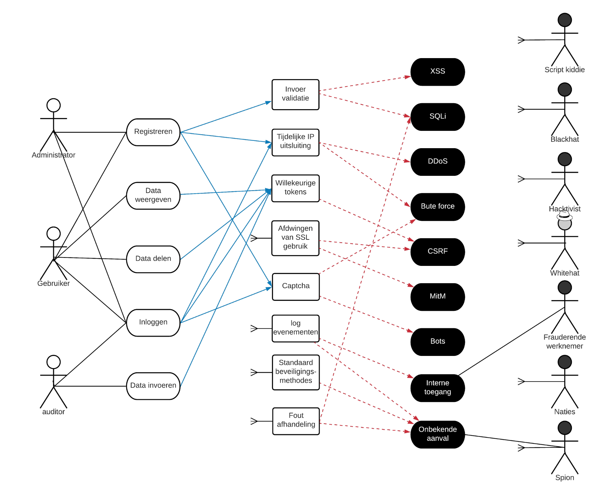

Bedreiginsanalyse op Datastreams Platform
Bedreigingsacteur | Motivatie | Misbruik activiteiten |
Script kiddies | Script kiddies vallen JOU niet specifiek aan, maar gebruiken bepaalde tooling op blootgestelde functionaliteiten of systemen. Hun motivatie is de kik die ze krijgen van het hacken en het leren hacken. | Geautomatiseerde tooling laten draaien op systemen om zo een lek te vinden. |
Frauderende werknemer | Financiële motivatie. | Makkelijk misbruik van toegang tot systemen/bestanden. |
Hacktivists | Om hun politieke agenda te versterken. | Er wordt als groep een aanval gepleegd op het systeem. |
Whitehat hackers | Bewijzen aan een bedrijf dat de beveiliging niet in orde is. | Fouten in het systeem vinden om dit op te lossen, zodat mensen met kwade bedoelingen niet de kans krijgen om het systeem te hacken. |
Blackhat hackers | (los)geld. | Het stelen van bedrijfsgeheimen en het vragen van losgeld daarvoor of het doorverkopen aan de zwarte markt. |
Cyber Spionage | Intellectuele eigendommen. | Er wordt een hackersgroep betaald om het systeem aan te vallen en de intellectuele eigendommen (van gebruikers) te stelen. |
Cyber oorlogsvoering | Een land aanvallen. | Militaire hackers inzetten om het land aan te vallen. |
In dit hoofdstuk zijn de misuse cases uitgewerkt in een model. De kraaienpoten zijn gebruikt om een groot aantal onoverzichtelijke relaties te voorkomen. Deze kraaienpoten staan symbool voor een relatie naar (bijna) alle componenten
